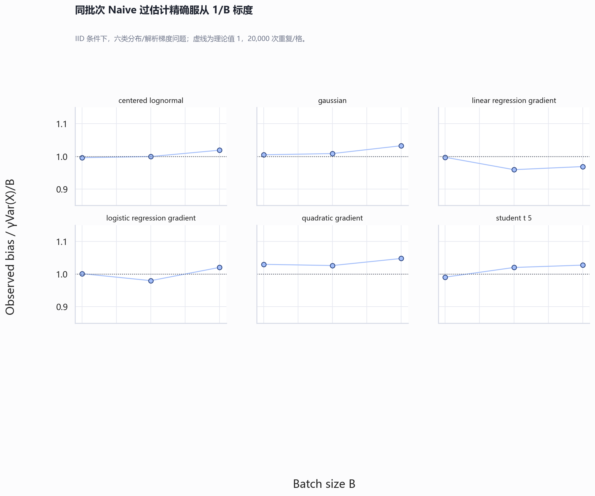
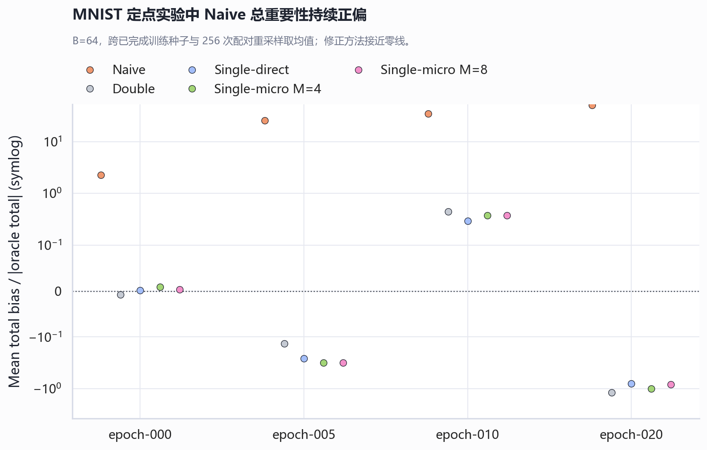
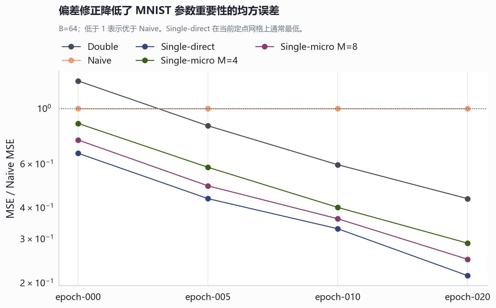
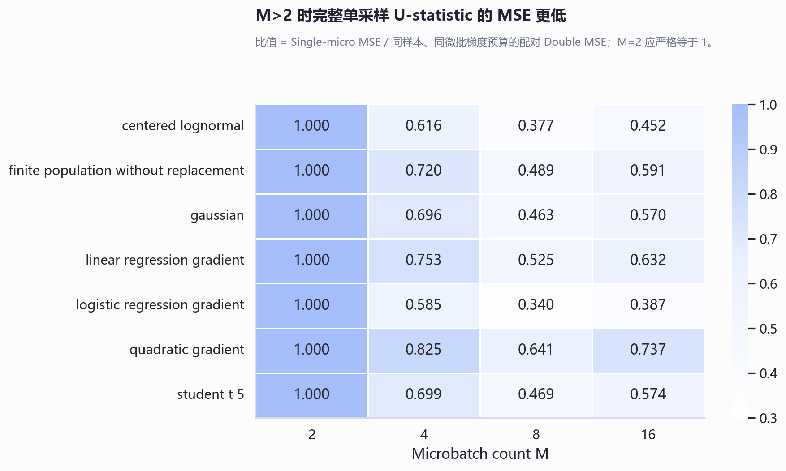
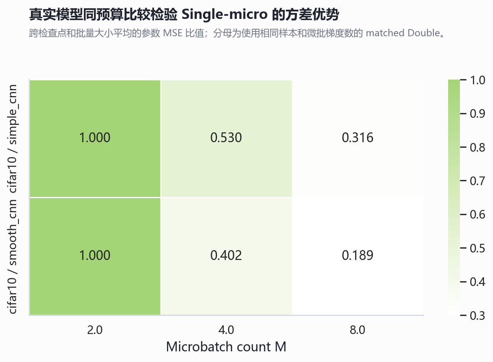
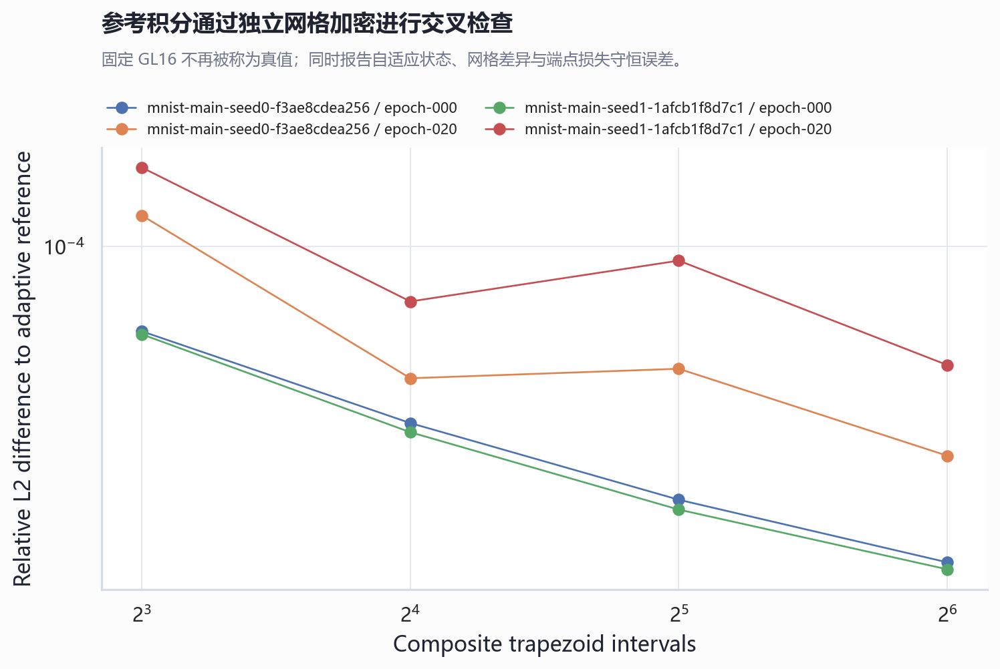
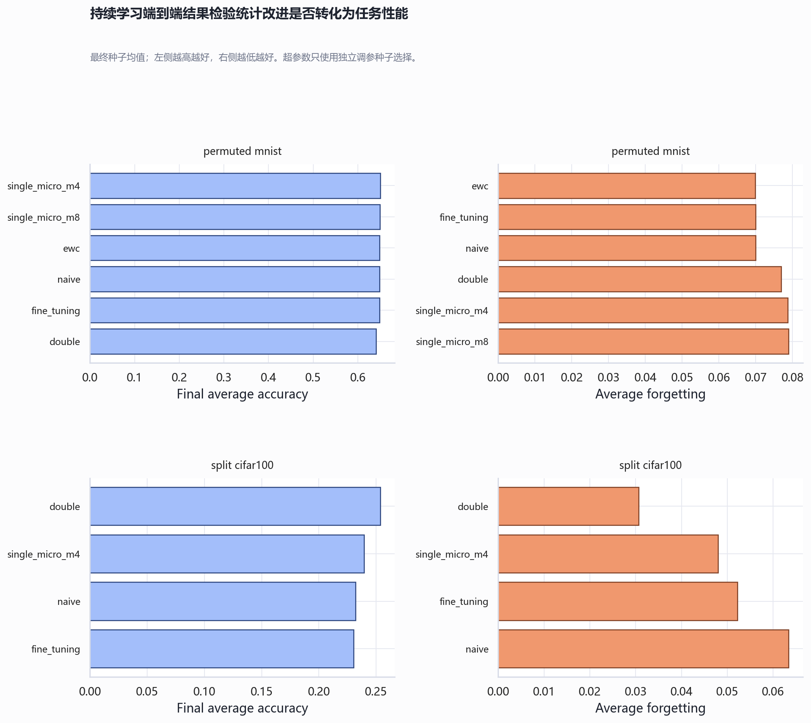

参数重要性过估计验证实验报告
分支 codex/overestimation-validation · 生成时间 2026-06-11 22:05 中国标准时间 · 共读取 19 个结果文件
技术摘要
γVar/B 缩放。主结论是：同一批次同时用于更新梯度和重要性评估，会产生结构性的正偏；协方差/U-statistic 修正针对该期望偏差项。它不保证每次估计都更接近 Oracle，因为去偏和方差之间存在权衡。单采样也并非在所有意义下“总是更好”，但在相同样本数和相同微批梯度评估数下，M>2 时其完整配对平均具有更低 MSE；M=2 与对称双采样严格等价。
| 主假设 | 汇总效应 | 原始 p | Holm p | 通过 |
|---|---|---|---|---|
| H1 | 1.008 | 1.562e-79 | 4.687e-79 | True |
| H2 | 1.485e-05 | 1.000 | 1.000 | False |
| H3 | 0.699 | 7.347e-11 | 1.469e-10 | True |
证据一：过估计不是偶然波动，而是可预测偏差
对单节点 SI，Naive 估计为 γ·X̄²，因此 IID 条件下 E[Naive]-Oracle=γVar(X)/B。实验覆盖 Gaussian、Student-t(5)、中心化对数正态、二次损失、线性回归梯度和逻辑回归梯度，观测偏差与理论 1/B 标度一致。有限总体无放回抽样作为理论失效压力测试单独报告。

真实 MNIST MLP 定点结果也显示 Naive 总重要性正偏。当前报告读取 5 个已完成种子，每检查点/批量大小每种子 256 次配对重采样。H1 的真实模型判据通过 28/28 个条件。

证据二：两种去偏方法在偏差上有效，方差与成本不同
Double 使用独立子样本消除乘积中的协方差项；Single-direct 使用逐样本交叉协方差修正；Single-micro 以 M 个微批均值构造同一 U-statistic 的低内存版本。受控实验采用 ±5% Oracle 尺度 TOST，并同时要求相对 Naive 的绝对误差显著下降。均值偏差显著缩小，但 Double 的方差常使平均绝对误差高于 Naive；因此 H2 的严格综合判据没有全局通过。真实模型中 H2 通过 0/112 个估计器条件，种子数不足或 Oracle 接近零时 TOST 尤其严格。
| 估计器 | |均值偏差| / Naive | 平均绝对误差 / Naive | 严格通过数 | 条件数 |
|---|---|---|---|---|
| double_matched | 0.054 | 1.151 | 7 | 66 |
| single_direct | 0.044 | 0.991 | 22 | 66 |
| single_micro | 0.044 | 1.005 | 22 | 66 |

| 数据集 | 模型 | 检查点 | 估计器 | 种子数 | 总偏差 | 相对总偏差 | 参数平均绝对偏差 | 参数 MSE | 排序相关 |
|---|---|---|---|---|---|---|---|---|---|
| cifar10 | simple_cnn | epoch-000 | double | 3 | 2.876e-06 | 1.763 | 6.996e-10 | 8.718e-15 | 0.050 |
| cifar10 | simple_cnn | epoch-000 | naive | 3 | 1.257e-04 | 40.777 | 5.585e-10 | 7.239e-15 | 0.896 |
| cifar10 | simple_cnn | epoch-000 | single_direct | 3 | -5.555e-07 | 0.407 | 5.590e-10 | 4.840e-15 | -0.241 |
| cifar10 | simple_cnn | epoch-000 | single_micro_m4 | 3 | -1.613e-06 | -0.087 | 6.250e-10 | 6.107e-15 | -0.131 |
| cifar10 | simple_cnn | epoch-000 | single_micro_m8 | 3 | -7.355e-07 | 0.086 | 5.865e-10 | 5.395e-15 | -0.195 |
| cifar10 | simple_cnn | epoch-005 | double | 3 | -0.001 | -0.079 | 1.086e-07 | 3.547e-12 | 0.237 |
| cifar10 | simple_cnn | epoch-005 | naive | 3 | 0.011 | 0.889 | 9.283e-08 | 3.258e-12 | 0.840 |
| cifar10 | simple_cnn | epoch-005 | single_direct | 3 | -0.002 | -0.126 | 9.804e-08 | 2.996e-12 | 0.031 |
| cifar10 | simple_cnn | epoch-005 | single_micro_m4 | 3 | -0.001 | -0.106 | 1.024e-07 | 3.273e-12 | 0.112 |
| cifar10 | simple_cnn | epoch-005 | single_micro_m8 | 3 | -0.001 | -0.106 | 9.964e-08 | 3.102e-12 | 0.069 |
| cifar10 | simple_cnn | epoch-010 | double | 3 | -0.002 | -0.118 | 2.048e-07 | 7.323e-12 | 0.313 |
| cifar10 | simple_cnn | epoch-010 | naive | 3 | 0.018 | 0.891 | 1.807e-07 | 6.786e-12 | 0.771 |
| cifar10 | simple_cnn | epoch-010 | single_direct | 3 | -0.002 | -0.089 | 1.849e-07 | 6.329e-12 | 0.182 |
| cifar10 | simple_cnn | epoch-010 | single_micro_m4 | 3 | -0.002 | -0.087 | 1.935e-07 | 6.709e-12 | 0.233 |
| cifar10 | simple_cnn | epoch-010 | single_micro_m8 | 3 | -0.002 | -0.084 | 1.886e-07 | 6.480e-12 | 0.202 |
| cifar10 | simple_cnn | epoch-020 | double | 3 | -0.002 | -0.045 | 2.649e-07 | 2.630e-12 | 0.294 |
| cifar10 | simple_cnn | epoch-020 | naive | 3 | 0.030 | 0.854 | 2.353e-07 | 2.516e-12 | 0.675 |
| cifar10 | simple_cnn | epoch-020 | single_direct | 3 | -0.002 | -0.027 | 2.354e-07 | 2.163e-12 | 0.204 |
| cifar10 | simple_cnn | epoch-020 | single_micro_m4 | 3 | -0.002 | -0.036 | 2.462e-07 | 2.301e-12 | 0.239 |
| cifar10 | simple_cnn | epoch-020 | single_micro_m8 | 3 | -0.002 | -0.036 | 2.405e-07 | 2.225e-12 | 0.218 |
| cifar10 | smooth_cnn | epoch-000 | double | 3 | 8.061e-04 | -0.033 | 9.532e-08 | 1.791e-12 | 0.236 |
| cifar10 | smooth_cnn | epoch-000 | naive | 3 | 0.013 | 2.326 | 7.982e-08 | 1.604e-12 | 0.555 |
| cifar10 | smooth_cnn | epoch-000 | single_direct | 3 | 4.281e-04 | -0.076 | 8.286e-08 | 1.294e-12 | 0.107 |
| cifar10 | smooth_cnn | epoch-000 | single_micro_m4 | 3 | 3.380e-04 | -0.056 | 8.749e-08 | 1.439e-12 | 0.165 |
| cifar10 | smooth_cnn | epoch-000 | single_micro_m8 | 3 | 4.086e-04 | -0.035 | 8.497e-08 | 1.343e-12 | 0.134 |
| cifar10 | smooth_cnn | epoch-005 | double | 3 | -3.036e-04 | 1.737 | 2.180e-08 | 3.058e-13 | 0.059 |
| cifar10 | smooth_cnn | epoch-005 | naive | 3 | 0.003 | 26.966 | 1.719e-08 | 2.556e-13 | 0.478 |
| cifar10 | smooth_cnn | epoch-005 | single_direct | 3 | -5.872e-04 | -0.828 | 1.892e-08 | 1.955e-13 | -0.149 |
| cifar10 | smooth_cnn | epoch-005 | single_micro_m4 | 3 | -4.858e-04 | -0.027 | 2.023e-08 | 2.273e-13 | -0.050 |
| cifar10 | smooth_cnn | epoch-005 | single_micro_m8 | 3 | -5.475e-04 | -0.314 | 1.934e-08 | 2.052e-13 | -0.100 |
| cifar10 | smooth_cnn | epoch-010 | double | 3 | -5.184e-04 | -0.110 | 5.142e-08 | 1.439e-12 | 0.207 |
| cifar10 | smooth_cnn | epoch-010 | naive | 3 | 0.006 | 1.481 | 4.160e-08 | 1.187e-12 | 0.585 |
| cifar10 | smooth_cnn | epoch-010 | single_direct | 3 | -5.179e-04 | -0.104 | 4.426e-08 | 8.584e-13 | 0.046 |
| cifar10 | smooth_cnn | epoch-010 | single_micro_m4 | 3 | -3.982e-04 | -0.073 | 4.741e-08 | 1.077e-12 | 0.129 |
| cifar10 | smooth_cnn | epoch-010 | single_micro_m8 | 3 | -4.600e-04 | -0.087 | 4.588e-08 | 9.537e-13 | 0.079 |
| cifar10 | smooth_cnn | epoch-020 | double | 3 | -2.208e-04 | -0.016 | 1.318e-07 | 2.211e-12 | 0.192 |
| cifar10 | smooth_cnn | epoch-020 | naive | 3 | 0.019 | 1.874 | 1.124e-07 | 2.220e-12 | 0.690 |
| cifar10 | smooth_cnn | epoch-020 | single_direct | 3 | -4.868e-04 | -0.040 | 1.132e-07 | 1.404e-12 | 0.016 |
| cifar10 | smooth_cnn | epoch-020 | single_micro_m4 | 3 | -1.863e-04 | -0.008 | 1.199e-07 | 1.616e-12 | 0.089 |
| cifar10 | smooth_cnn | epoch-020 | single_micro_m8 | 3 | -3.967e-04 | -0.033 | 1.160e-07 | 1.471e-12 | 0.048 |
| mnist | mlp | epoch-000 | double | 5 | -2.046e-06 | -0.008 | 4.214e-09 | 2.987e-14 | 0.172 |
| mnist | mlp | epoch-000 | naive | 5 | 7.523e-04 | 2.287 | 3.525e-09 | 2.316e-14 | 0.812 |
| mnist | mlp | epoch-000 | single_direct | 5 | 9.040e-07 | 0.001 | 3.534e-09 | 1.531e-14 | 0.008 |
| mnist | mlp | epoch-000 | single_micro_m4 | 5 | 3.626e-06 | 0.009 | 3.804e-09 | 2.017e-14 | 0.069 |
| mnist | mlp | epoch-000 | single_micro_m8 | 5 | 1.581e-06 | 0.003 | 3.648e-09 | 1.731e-14 | 0.033 |
| mnist | mlp | epoch-005 | double | 5 | -3.381e-05 | -0.134 | 3.839e-08 | 8.752e-14 | 0.031 |
| mnist | mlp | epoch-005 | naive | 5 | 0.011 | 25.986 | 4.258e-08 | 1.027e-13 | 0.800 |
| mnist | mlp | epoch-005 | single_direct | 5 | -4.000e-05 | -0.263 | 3.062e-08 | 4.468e-14 | -0.108 |
| mnist | mlp | epoch-005 | single_micro_m4 | 5 | -7.145e-05 | -0.314 | 3.379e-08 | 5.966e-14 | -0.054 |
| mnist | mlp | epoch-005 | single_micro_m8 | 5 | -6.570e-05 | -0.313 | 3.188e-08 | 5.027e-14 | -0.086 |
| mnist | mlp | epoch-010 | double | 5 | 7.059e-05 | 0.443 | 2.516e-08 | 3.620e-14 | 0.037 |
| mnist | mlp | epoch-010 | naive | 5 | 0.009 | 35.201 | 3.605e-08 | 6.085e-14 | 0.798 |
| mnist | mlp | epoch-010 | single_direct | 5 | 7.912e-05 | 0.293 | 2.065e-08 | 2.005e-14 | -0.069 |
| mnist | mlp | epoch-010 | single_micro_m4 | 5 | 7.215e-05 | 0.376 | 2.233e-08 | 2.441e-14 | -0.025 |
| mnist | mlp | epoch-010 | single_micro_m8 | 5 | 7.482e-05 | 0.371 | 2.141e-08 | 2.198e-14 | -0.050 |
| mnist | mlp | epoch-020 | double | 5 | -9.182e-05 | -1.186 | 1.432e-08 | 1.863e-14 | 0.037 |
| mnist | mlp | epoch-020 | naive | 5 | 0.007 | 50.767 | 2.822e-08 | 4.282e-14 | 0.788 |
| mnist | mlp | epoch-020 | single_direct | 5 | -9.824e-05 | -0.797 | 1.186e-08 | 9.153e-15 | -0.049 |
| mnist | mlp | epoch-020 | single_micro_m4 | 5 | -1.252e-04 | -1.003 | 1.289e-08 | 1.235e-14 | -0.012 |
| mnist | mlp | epoch-020 | single_micro_m8 | 5 | -1.062e-04 | -0.828 | 1.235e-08 | 1.064e-14 | -0.034 |
证据三：单采样优势来自使用全部交叉配对
为避免不公平比较，报告新增 double_matched_mM：它与 Single-micro 使用完全相同的 B 个样本和 M 个微批梯度，只保留 M/2 个不相交配对；Single-micro 则平均全部 M(M-1)/2 个交叉配对。聚合 MSE 比值为：M=2 1.000，M=4 0.710，M=8 0.481，M=16 0.581。

真实模型的同预算 H3 条件通过 48/48。M=2 采用 ±5% 等价区间，M>2 要求 95% 聚类 bootstrap 上界低于 1。

范围、数据与指标定义
| 实验范围 | 结果行数 | 实际覆盖 | 状态 |
|---|---|---|---|
| 受控统计 | 1540000 | 7 类总体/问题；B=[8, 32, 128]；M=[2, 4, 8, 16] | 完成 |
| 定点：cifar10 / simple_cnn | 92160 | 3 seeds；4 checkpoints；B=[16, 64] | 完成结果已纳入 |
| 定点：cifar10 / smooth_cnn | 92160 | 3 seeds；4 checkpoints；B=[16, 64] | 完成结果已纳入 |
| 定点：mnist / mlp | 430080 | 5 seeds；4 checkpoints；B=[16, 64, 256] | 完成结果已纳入 |
| 多节点求积定向消融 | 3072 | MNIST；同一模型权重；Simpson-3 / GL3；GL16 对照；B=64，M=4 | 完成结果已纳入 |
| 积分参考认证 | 4 | 4/4 checkpoints certified | 完成 |
| 持续学习：permuted_mnist | 18 | 6 methods；3 final seeds | 完成结果已纳入 |
| 持续学习：split_cifar100 | 4 | 4 methods；1 final seeds | 完成结果已纳入 |
| 理论边界压力测试 | 15360 | 无放回、Momentum、AdamW；各 1 seed，初始化/最终检查点 | 完成结果已纳入 |
受控统计实验每格 20,000 次重复，B∈{8,32,128}、M∈{2,4,8,16}。真实模型主实验为 MNIST MLP，检查点位于训练 0%、25%、50%、100%，全数据 Oracle 使用固定类别平衡的 10,000 样本总体。估计器指标包括有符号偏差、参数平均绝对偏差、MSE、Spearman 排序相关、总重要性与 Oracle 总和之差、反向传播计数和峰值显存。
“实际显著”要求 Naive 偏差 95% CI 下界大于 0，且超过 Oracle 尺度的 10%；“修正有效”不能只依赖未拒绝零偏差，而必须通过 TOST 等价检验并显著降低绝对误差；H3 使用配对 MSE 比值，M=2 检验等价，M>2 检验上界是否低于 1。
方法与参考积分认证
Naive: γ · ū · v̄ Single-direct: γ · (ū · v̄ - s_uv / B) Single-micro: γ · (ū · v̄ - s_uv,micro / M) Path importance per parameter: -Δθ_k ∫₀¹ ∂L(θ+αΔθ)/∂θ_k dα
固定高阶 Gauss-Legendre 只能是高精度近似，不能被认定为数学真值。新的参考协议采用三条证据链：SciPy 自适应 Gauss-Kronrod 向量积分；独立的复合梯形 8/16/32 区间加密；以及端点损失恒等式 Σω_k = L(θ₀)-L(θ₁) 的全局守恒检查。只有三者同时达到预设容差才标记为“参考认证”。

| 来源运行 | 检查点 | 自适应收敛 | 函数评估 | 独立网格相对差 | 相邻网格相对差 | 守恒相对误差 | 参考认证 |
|---|---|---|---|---|---|---|---|
| mnist-main-seed0-f3ae8cdea256 | epoch-000 | True | 63 | 1.546e-05 | 1.238e-05 | 1.176e-04 | True |
| mnist-main-seed0-f3ae8cdea256 | epoch-020 | True | 63 | 2.905e-05 | 2.814e-05 | 3.272e-06 | True |
| mnist-main-seed1-1afcb1f8d7c1 | epoch-000 | True | 63 | 1.483e-05 | 1.225e-05 | 5.621e-05 | True |
| mnist-main-seed1-1afcb1f8d7c1 | epoch-020 | True | 63 | 4.967e-05 | 4.949e-05 | 1.642e-05 | True |
固定低阶求积与协方差消融
定向多节点实验中，Simpson-3/GL3 相对 GL16 的逐参数平均差最大为 5.44e-13；PPT 仅减起点方差与完整协方差修正的总误差 MSE 比值范围为 0.997–1.005。这说明当前 MNIST 小步长路径下两者近似重合，但不能外推到大步长、强曲率或非光滑折点密集的路径。
定向实验与自适应参考的模型文件哈希完全一致。GL16 与 adaptive GK21 的层级总和相对 L2 差在初始化和训练终点分别为 1.47e-6 与 6.43e-6，因此 GL16 在这两个特定检查点上得到很强的数值支持；结论仍应表述为“经独立方法认证的高精度近似”。
| 检查点 | 求积规则 | 估计器 | 平均总偏差 | 平均绝对总偏差 | 参数 MSE | 相对 GL16 的参数平均差 |
|---|---|---|---|---|---|---|
| epoch-000 | gauss_legendre_3 | naive | 7.088e-04 | 7.088e-04 | 2.260e-14 | 3.642e-13 |
| epoch-000 | gauss_legendre_3 | ppt_variance_only | -7.545e-06 | 1.415e-04 | 1.386e-14 | 3.642e-13 |
| epoch-000 | gauss_legendre_3 | single_direct | -7.086e-06 | 1.415e-04 | 1.386e-14 | 3.642e-13 |
| epoch-000 | gauss_legendre_3 | single_micro_m4 | -2.122e-06 | 1.763e-04 | 1.870e-14 | 3.642e-13 |
| epoch-000 | simpson3 | naive | 7.718e-04 | 7.718e-04 | 3.392e-14 | 5.438e-13 |
| epoch-000 | simpson3 | ppt_variance_only | 5.148e-05 | 1.956e-04 | 2.312e-14 | 5.438e-13 |
| epoch-000 | simpson3 | single_direct | 5.190e-05 | 1.956e-04 | 2.312e-14 | 5.438e-13 |
| epoch-000 | simpson3 | single_micro_m4 | 7.303e-05 | 2.219e-04 | 2.579e-14 | 5.438e-13 |
| epoch-020 | gauss_legendre_3 | naive | 0.004 | 0.004 | 1.542e-14 | 4.321e-14 |
| epoch-020 | gauss_legendre_3 | ppt_variance_only | 7.202e-06 | 4.805e-04 | 2.323e-15 | 4.321e-14 |
| epoch-020 | gauss_legendre_3 | single_direct | 1.181e-05 | 4.779e-04 | 2.322e-15 | 4.321e-14 |
| epoch-020 | gauss_legendre_3 | single_micro_m4 | 4.746e-05 | 5.154e-04 | 2.677e-15 | 4.321e-14 |
| epoch-020 | simpson3 | naive | 0.005 | 0.005 | 1.596e-14 | 5.753e-14 |
| epoch-020 | simpson3 | ppt_variance_only | -1.032e-04 | 4.845e-04 | 3.304e-15 | 5.753e-14 |
| epoch-020 | simpson3 | single_direct | -1.001e-04 | 4.850e-04 | 3.305e-15 | 5.753e-14 |
| epoch-020 | simpson3 | single_micro_m4 | -2.856e-05 | 5.434e-04 | 4.376e-15 | 5.753e-14 |
局限性、不确定性与稳健性
- 单节点 SI 验证随机梯度乘积的过估计机制，但不是完整路径积分；多节点结果必须依赖上面的数值积分认证。
- ReLU 和 MaxPool 使梯度沿路径分段变化，自适应积分可能因大量折点或 float32 数值噪声无法达到很紧的误差目标；未认证不等于结论错误，而是精度证据不足。
- 严格无偏结论限定于无动量、无权重衰减 SGD 与明确的采样协议。Momentum、AdamW、数据增强、有限总体无放回属于外推压力测试。
- 参数级重要性可正可负且 Oracle 均值很小，单一“相对偏差”可能爆炸；报告同时给出绝对偏差、MSE、总和偏差与排序相关。
- 当前定点运行的墙钟字段覆盖同一重复内的整套估计器计算，不能用于估计器间独立速度排名；公平成本结论以样本数、梯度评估数和持续学习整段耗时为主。
- 主假设使用 Holm 校正；条件级 CI 使用 10,000 次 Monte Carlo 分块或种子聚类 bootstrap，避免把海量批次重复误当作独立训练种子。
| 压力条件 | 估计器 | 平均总偏差 | 参数平均绝对偏差 | MSE / Naive |
|---|---|---|---|---|
| AdamW 检查点 | double | -2.959e-06 | 2.188e-10 | 0.601 |
| AdamW 检查点 | naive | 1.087e-04 | 4.516e-10 | 1.000 |
| AdamW 检查点 | single_direct | -1.393e-06 | 1.855e-10 | 0.290 |
| AdamW 检查点 | single_micro_m4 | -2.006e-06 | 1.978e-10 | 0.385 |
| Momentum 检查点 | double | -1.398e-06 | 2.045e-09 | 1.344 |
| Momentum 检查点 | naive | 3.671e-04 | 1.723e-09 | 1.000 |
| Momentum 检查点 | single_direct | 5.196e-06 | 1.717e-09 | 0.651 |
| Momentum 检查点 | single_micro_m4 | 2.669e-06 | 1.848e-09 | 0.864 |
| 无放回抽样 | double | -2.746e-04 | 7.049e-09 | 0.894 |
| 无放回抽样 | naive | 0.003 | 1.180e-08 | 1.000 |
| 无放回抽样 | single_direct | -1.577e-04 | 5.969e-09 | 0.459 |
| 无放回抽样 | single_micro_m4 | -1.573e-04 | 6.469e-09 | 0.587 |
建议与结论边界
在偏差校准优先的严格 SGD 场景，可优先评估 Single-micro，M=4 或 M=8 通常在内存和相对 Double 的方差之间取得较好折中；但是否优于 Naive 必须按目标指标复核。M=2 没有统计效率优势，只是对称 Double 的等价写法。若可承受逐样本梯度，Single-direct 在当前 MNIST 定点实验中 MSE 最低，可作为研究基准。
不要把 GL16、任何固定阶数求积或一次守恒检查单独称为真值。建议使用“全数据、自适应误差控制、独立离散化交叉检查、端点损失守恒的数值参考”这一表述，并将未通过认证的检查点显式标注。
permuted_mnist：最终平均准确率最高的是 single_micro_m4 (0.6502)，相对 Fine-tuning 的准确率差为 +0.0017；其平均遗忘为 0.0787。该场景基于 3 个最终种子，种子少于 3 时仅作资源受限扩展证据。
split_cifar100：最终平均准确率最高的是 double (0.2536)，相对 Fine-tuning 的准确率差为 +0.0232；其平均遗忘为 0.0307。该场景基于 1 个最终种子，种子少于 3 时仅作资源受限扩展证据。

| 场景 | 方法 | 最终种子 | 最终平均准确率 | 准确率标准差 | 平均遗忘 | 后向迁移 | 训练秒数 | 处理样本 | 峰值显存 GB |
|---|---|---|---|---|---|---|---|---|---|
| permuted_mnist | double | 3 | 0.641 | 0.022 | 0.077 | -0.047 | 16.294 | 7.500e+04 | 0.030 |
| permuted_mnist | ewc | 3 | 0.648 | 0.029 | 0.070 | -0.046 | 14.617 | 7.500e+04 | 0.052 |
| permuted_mnist | fine_tuning | 3 | 0.648 | 0.029 | 0.070 | -0.046 | 14.371 | 7.500e+04 | 0.022 |
| permuted_mnist | naive | 3 | 0.648 | 0.029 | 0.070 | -0.046 | 9.570 | 7.500e+04 | 0.027 |
| permuted_mnist | single_micro_m4 | 3 | 0.650 | 0.014 | 0.079 | -0.052 | 13.127 | 7.488e+04 | 0.031 |
| permuted_mnist | single_micro_m8 | 3 | 0.650 | 0.014 | 0.079 | -0.052 | 15.818 | 7.488e+04 | 0.038 |
| split_cifar100 | double | 1 | 0.254 | NA | 0.031 | -0.006 | 7.768 | 1.000e+04 | 2.796 |
| split_cifar100 | fine_tuning | 1 | 0.230 | NA | 0.052 | -0.033 | 4.876 | 1.000e+04 | 1.908 |
| split_cifar100 | naive | 1 | 0.232 | NA | 0.063 | -0.034 | 6.398 | 1.000e+04 | 2.036 |
| split_cifar100 | single_micro_m4 | 1 | 0.239 | NA | 0.048 | -0.012 | 9.436 | 8960.000 | 4.016 |
进一步问题
最重要的后续问题有三个：协方差修正在多节点路径积分中是否仍能稳定改善参数排序；非光滑网络的折点密度如何决定参考积分成本；以及更准确的重要性是否在固定正则强度和独立调参协议下真实降低持续学习遗忘。上述问题需要 CIFAR-10 平滑/非平滑对照与 Permuted-MNIST、Split-CIFAR-100 端到端结果共同回答。
研究背景与实现依据包括 Zenke et al. (2017) SI、Benzing (2022) 无偏 SI、Hoeffding U-statistics、Şimşekli et al. (2019) 重尾梯度噪声，以及 SciPy quad_vec 自适应向量积分。详细文献与预注册协议见仓库 docs/。